<!DOCTYPE html>
<html lang="en">
  <head>
    <meta charset="utf-8" />
    <meta name="viewport" content="width=device-width, initial-scale=1.0, maximum-scale=1.0, user-scalable=no" />

    <title>LEAM</title>
    <link rel="shortcut icon" href="./favicon.ico" />
    <link rel="stylesheet" href="./dist/reset.css" />
    <link rel="stylesheet" href="./dist/reveal.css" />
    <link rel="stylesheet" href="./dist/theme/serif.css" id="theme" />
    <link rel="stylesheet" href="./css/highlight/base16/zenburn.css" />


  </head>
  <body>
    <div class="reveal">
      <div class="slides"><section  data-markdown><script type="text/template">
<style type="text/css"> 
h1,h2,h3,h4,p{ 
  text-align: left; 
}
h1.c,h2.c,h3.c{
  text-transform: capitalize;
}
h1.n,h2.n,h3.n,h4.n{
  text-transform: none;
}
h3.small{
  font-size: 55px;
}

img{
  text-align:left;
}
img.center{
  display: block; /* This is important for margin:auto to work */
  margin-left: 100px;
}
img.fl{
  float:left;
}
img.logo{
  margin-top: -30px;
  margin-bottom: -10px;
  max-width: 20%; 
  height: 60px; 
}
div.sma{
  font-size:35px;
  margin:40px 10px;
}
p.right{
  text-align:right;
  margin-right:100px;
}
p.main{
  font-size:28px;
}
h2.center,h3.center{
  text-align:center;
}
img.tem{
  border-radius: 8pt;
  height:700px;
}
#outter{
  display:flex;
  justify-content: space-around;
}
div.outter{
  display:flex;
  justify-content: center;
}
div.inner{
  display:flex;
  flex-direction: column;
  align-items:start;
  justify-content: space-evenly;
}
div.inner1{
  display:flex;
  flex-direction: column;
  align-items:start;
  justify-content: center;
}
div.shell{
  margin-top: -100px;
  margin-left:70px;
}
#ref{
  margin-left:100px;
  margin-top: -100px;
}
#cat{
  display:flex;
  flex-direction: column;
  justify-content:center;
}
span.green{
  color: #609966;
}
span.red{
  color: #EF5350;
}
span.yellow{
  color: #FFE17B;
}
span.blue{
  color: #5CD2E6;
}


</style> 

<div class="shell">
  <h2 class="c">Learning to Construct Better Mutation Faults</h2>
  <br/>
  <div style="text-align:left">
  <ul>
      <li>Authors:&emsp;Zhao Tian, Junjie Chen<sup>∗</sup>, Qihao Zhu, Junjie Yang, Lingming Zhang</li>
      <li>Source:&emsp;ASE'22</li>
  </ul>
  <br/><br/>
  </div><p class="right">汇报人 王小娅</p>
  <p class="right">汇报时间：11.21      </p>
</div>


</script></section><section  data-markdown><script type="text/template">

<div class="shell" style="margin-top:-100px">
  <h2>OUTLINE</h2><br/>
  <h3 class="n">Background : Why Mutation and How Mutation</h3>
  <h3 class="n">Motivation : Three Limitations of DeepMutation</h3>
  <h3 class="n">Approach : LEArning to Mutate(LEAM)</h3>
  <h3 class="n">Experiment Design and Results </h3>
  <h3 class="n">Summary </h3>
</div>

</script></section><section  data-markdown><script type="text/template">

<div class="shell" style="margin-top:-150px">
    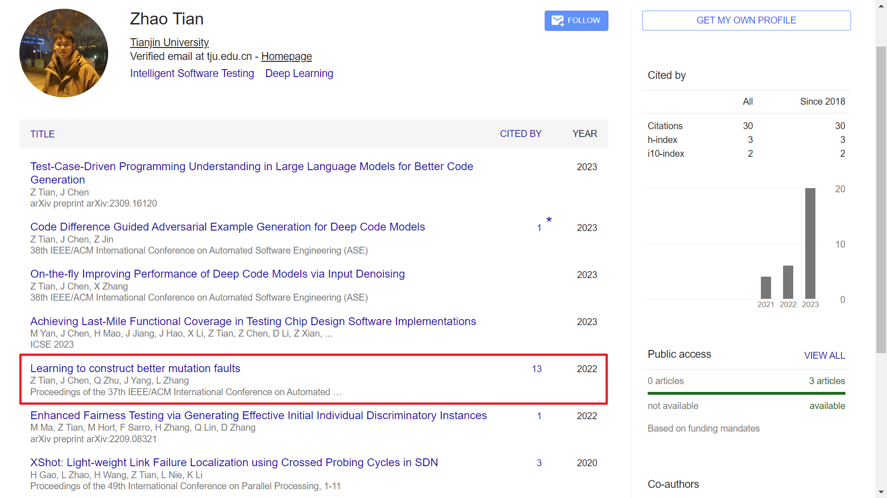
</div>

</script></section><section  data-markdown><script type="text/template">

<div class="shell" style="margin-top:-150px">
    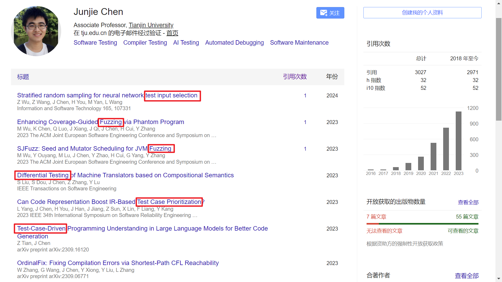
</div> 

</script></section><section  data-markdown><script type="text/template">

<div class="shell">
<h1 class="c">PartⅠ. Background</h1>
</div>

</script></section><section  data-markdown><script type="text/template">

<!-- 1. 变异测试的用途和基于变异的技术成为许多下游任务的SOTA方法 -> 构建好的变异缺陷成为至关重要的事
2. 传统的变异技术
  2.1 做法：手工设计一系列变异算子，每个算子都能执行一个小的语法改变来变异程序
  2.2 优点：简单且效果不错，在实践和学术中都得到广泛应用
  2.3 缺点：不足以表示真实缺陷，原因有二：变异算子集毕竟有限 + 当前变异算子聚焦语法，顾及不到语义
3. 引出DeepMutation，肯定其开辟了新道路，点出其效果还不如传统方法 -->


<div class="shell">
  <div class="inner">
    <h3 class="n">1. Mutation Testing and Mutation Faults</h3>
    <ul>
      <li>Mutation faults(mutants) and mutation operators</li>
      <li>Test case prioritization(TCP) and Fault location(FL)</li>
    </ul>
    <br/>
    <h3 class="n">2. Tranditional Mutation Technique</h3>
    <ul>
      <li>Major(ISSTA'14)</li>
      <li>PIT(ISSTA'16)</li>
    </ul>
    <p>Manually designing a series of mutation operators</p>
    <p>Simple and have achieved good effectiveness</p>
    <p>Set of mutation operators is limited and only focuses on simple syntactic changes</p>
  </div>
</div>

</script></section><section  data-markdown><script type="text/template">

<div class="shell">
  <div class="inner">
    <h3 class="n">3. DL-based Mutation Technique</h3><br>
    <ul>
      <li>DeepMutation(ICSE'19,ICSE'20)</li>
    </ul>
    <br>
    <p>Constructs mutation faults by learning from a number of real faults</p>
    <p>Opens a direction to avoid the efforts of manually designing mutation operators</p>
    <p>Just evaluated in terms of DL metrics</p>
</div>

</script></section><section  data-markdown><script type="text/template">

<div class="shell">
<h1 class="c">PartⅡ. Motivation</h1>
</div>

</script></section><section  data-markdown><script type="text/template">

<div class="shell">
  <div class="inner">
    <h3 class="n">1. Huge search space</h3>
    </p>It constructs a mutation fault by predicting a sequence of tokens one by one in the method.</p>
    </p>It is hard to achieve accurate prediction to form an expected mutated method.</p>
    <h3 class="n">2. Loses much program information</h3>
    </p>It treats a method to be mutated as a token stream.</p>
    <h3 class="n">3. Cannot ensure to produce syntactically correct programs</h3>
  </div>
</div>

</script></section><section  data-markdown><script type="text/template">


<div class="shell">
<h1 class="c">PartⅢ. Approach</h1>
</div>

</script></section><section  data-markdown><script type="text/template">

<div class="shell">
<!-- 放overview -->
  <div class="outter" >
    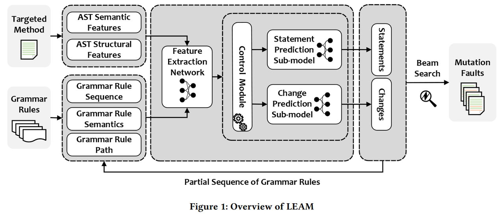
    <div class="inner" style="margin-left:50px">
      <p>Guaranteed syntactic correctness.</p>
      <p>More comprehensive program features.</p>
      <p>Reduced search space.</p>
    </div>
  </div>
  <p>Step 1. output the probability of each statement to be mutated under the context of the targeted method.</p>
  <p>Step 2. output the probability of each grammar rule to be applied to expand the current non-terminal.</p>
</div>

</script></section><section  data-markdown><script type="text/template">

<div class="shell">
  <h2>Grammar Rule Definition</h2>
  <br>
  <div class="outter">
    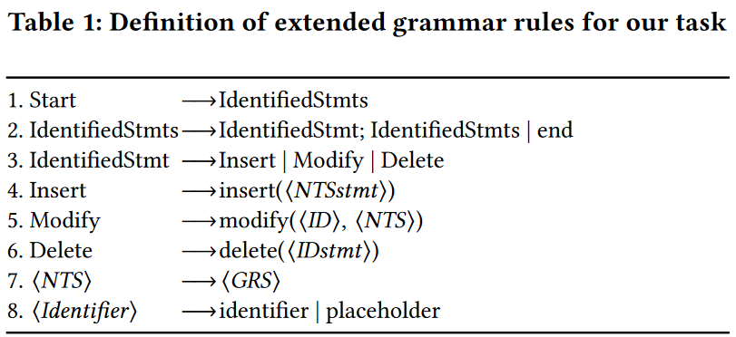
    <p>&emsp;</p>
    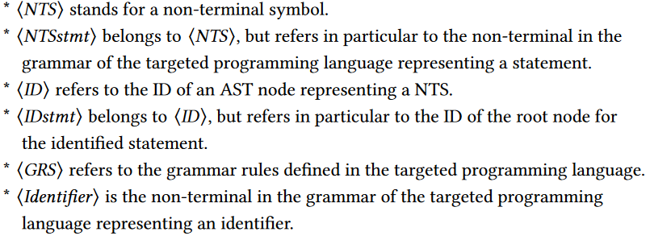
  </div>
  <p>Rules 1-2 to support the prediction of the statements to be mutated</p>
  <p>Rules 3-6 define three operations on each identified statement.</p>
</div>

</script></section><section  data-markdown><script type="text/template">

<div class="shell">
  <h2>Feature Extraction</h2><br>
  <h3>Statement prediction</h3>
    <p>AST semantic features</p>
    <p>AST structural features</p>
  <h3>Change prediction</h3>
    <p>Grammar rule sequence</p>
    <p>Grammar rule semantics</p>
    <p>Grammar rule path</p>
</div>

</script></section><section  data-markdown><script type="text/template">

<div class="shell">
  <h2>Grammar Rule Prediction</h2><br>
  <h3>The Model</h3>
    <p>the state-of-the-art syntax-guided code generation model, i.e., TreeGen(AAAI'19)</p>
    <p>a control module to determine which sub-model is enabled.</p>
  <h3>The Training Data</h3>
    <p>collected fault-fixing commits(keywords:bug, issue, problem, error, fix, and solve.)</p>
    <p>treating a fault-fixing commit as the clean version and its prior commit as the faulty version</p>
    <p>297,029 real faults  {training:80%, validation:20%}</p>
</div>

</script></section><section  data-markdown><script type="text/template">

<div class="shell">
  <h2>Mutation Fault Construction</h2><br>
  <h3>Beam Search Algorithm</h3>
    <p>construct a set of mutation faults for a targeted method</p>
    <p>the best beam size to balance the accuracy and efficiency is 64</p>
  <h3>When to Stop</h3>
    <p>When all the non-terminals have been expanded</p>
    <p>When its length reached a pre-defined threshold 𝜁 (60) </p>
</div>

</script></section><section  data-markdown><script type="text/template">

<div class="shell">
<h1 class="c">PartⅣ. Experiments</h1>
</div>

</script></section><section  data-markdown><script type="text/template">

<div class="shell">
<!-- 4个RQs, 分上下左右四块 -->
  <div class="outter">
    <div class="inner" style="margin-right:-100px">
      <div>
        <h3 class="n">Three Scenarios of Mutation Faults</h3>
      </div>
      </br>
    </div>
    <div class="inner">
      <div>
        <h4 class="n">RQ1 - Effectiveness Comparison in Mutation Testing</h4>
      </div>
      </br>
      <div>
        <h4 class="n">RQ2 - Effectiveness Comparison in Mutation-based Test Case Prioritization</h4>
      </div>
      </br>
      <div>
        <h4 class="n">RQ3 - Effectiveness Comparison in Mutation-based Fault Localization </h4>
      </div>
    </div>
  </div>
</div>

</script></section><section  data-markdown><script type="text/template">

<div class="shell">
  <h2>Evaluation Dataset</h2><br>
    <p>357 real faults in Defects4J V1.0</p>
    <p>i.e. Commons Lang, Joda-Time, Commons Math, JFreeChart, and Closure Compiler</p>
</div>

</script></section><section  data-markdown><script type="text/template">

<div class="shell">
  <h2>RQ1:Mutation Testing</h2>
  <h3>Baselines</h3>
    <p>Major(ISSTA'14) | PIT(ISSTA'16) | DeepMutation(ICSE'19)</p>
  <h3>Metrics</h3>
    <p>how the mutation faults can represent real faults in terms of adequate test suites</p>
    <p>how the mutation faults can represent the mutation faults constructed by other mutation techniques</p>
    <p>how mutation faults can represent real faults in terms of non-adequate test suites</p>
  <hr>
  <p>The average number of mutation faults constructed by the above technique :<br> DeepMutation(11) < LEAM(347) < Major(597) < PIT(2,719)</p>
</div>

</script></section><section  data-markdown><script type="text/template">

<div class="shell">
  <h2>RQ2:Mutation-based Test Case Prioritization</h2>
  <h3>Baselines(RQ1 baselines + X)</h3>
    <p>1. GRK : maximizes the number of additionally killed mutation faults</p>
    <p>2. GRD : maximizes the number of additionally distinguished mutation faults</p>
    <p>3. HYB-𝜔 : maximizes the weighted sum of the above two numbers</p>
  <h3>Metrics</h3>
    <p>Average Percentage of Faults Detected(APFD)</p>
    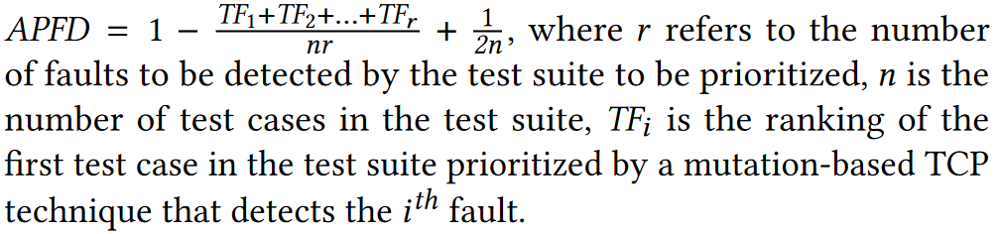
</div>

</script></section><section  data-markdown><script type="text/template">

<div class="shell">
  <h2>RQ3:Mutation-based Fault Localization</h2><br>
  <h3>Baselines(RQ1 baselines + X)</h3>
    <p>1. Metallaxis(STVR'15)</p>
    <p>2. Muse(ICST'14)</p>
  <h3>Metrics</h3>
    <p>Top-N (N = 1,3,5)</p>
    <p>Mean First Rank (MFR) </p>
    <p>Mean Average Rank (MAR) </p>
</div>

</script></section><section  data-markdown><script type="text/template">
<!-- 左图右文 -->
<div class="shell">
  <h2>RQ1 // Metric 1</h2>
  <div class="outter">
    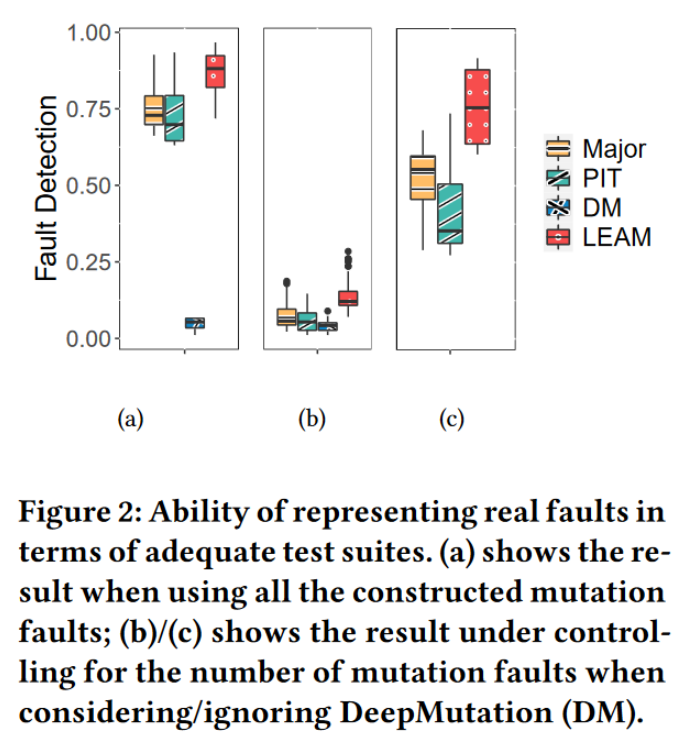
    <div class="inner1" style="margin-left:100px">
      <p>LEAM detects the largest percentage of real faults by the constructed test suite</p>
      <p>(c) - The medium percentage of real faults detected by LEAM across all the versions is 75.35%, while that by Major and PIT are 55.46% and 35.29%</p>
      <p></p>
    </div>
  </div>  
</div>

</script></section><section  data-markdown><script type="text/template">
<!-- 上图下文 -->
<div class="shell">
  <h2>RQ1 // Metric 2</h2>
  <div class="inner">
    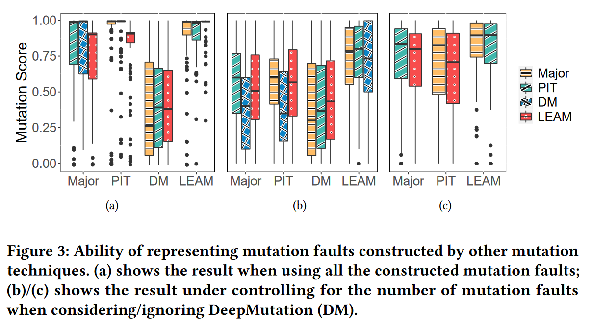
    <p>LEAM over Major, LEAM over PIT, and LEAM over DeepMutation are 0.99, 0.98, and 0.99.</p>  
    <p>LEAM can better represent the mutation faults constructed by other the other three techniques.</p>
  </div>  
</div>

</script></section><section  data-markdown><script type="text/template">

<!-- 上图下文 -->
<div class="shell">
  <h2>RQ1 // Metric 3</h2>
  <div class="inner">
    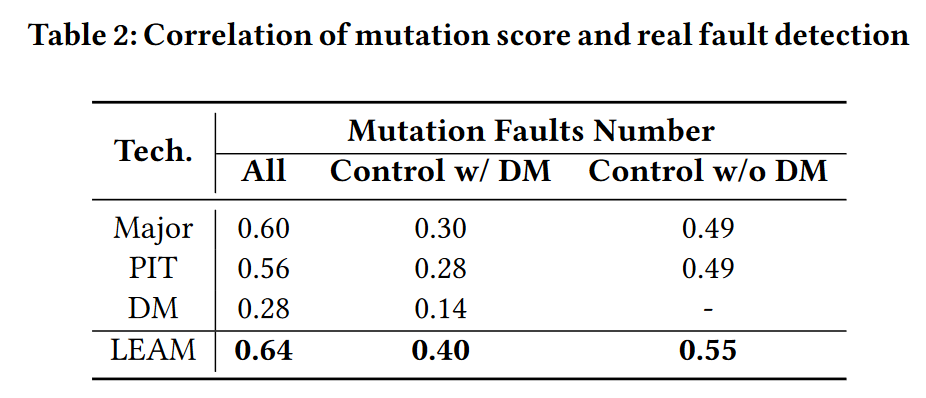
    <p>There is stronger correlation between mutation score on mutation faults constructed by LEAM and real fault detection</p>  
  </div>  
</div>

</script></section><section  data-markdown><script type="text/template">

<!-- 上图下文 -->
<div class="shell">
  <h2>RQ2</h2>
  <div class="inner">
    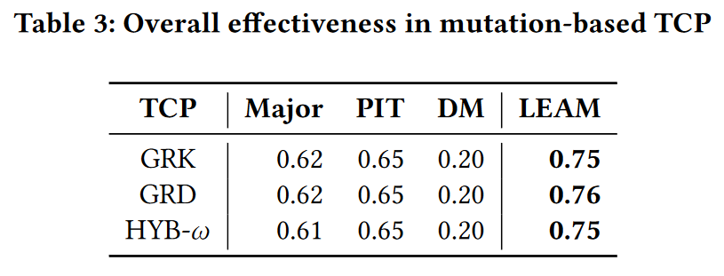
    <p>LEAM significantly outperforms all the compared mutation techniques in the scenario of mutation-based TCP.</p>  
  </div>  
</div>

</script></section><section  data-markdown><script type="text/template">

<!-- 上图下文 -->
<div class="shell">
  <h2>RQ3</h2>
  <div class="inner">
    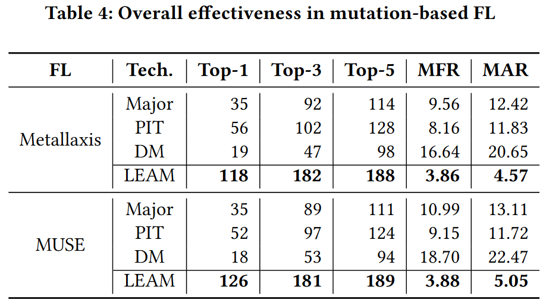
    <p>LEAM significantly outperforms all the compared mutation techniques in the scenario of mutation-based FL.</p>  
  </div>  
</div>

</script></section><section  data-markdown><script type="text/template">

<div class="shell">
<h1 class="c">PartⅤ. Summary</h1>
</div>

</script></section><section  data-markdown><script type="text/template">

<div class="shell">

  <div id="inner">
    <h2 class="n">Conclusion</h2><br>
    <p>1. A novel DL-based technique (i.e., LEAM) to construct mutation faults by learning from real faults.</p>
    <p>2. Three key elements of their method：</p>
      <p>Extending a set of grammar rules specific to the mutation task</p>
      <p>Reduces search space by first predicting the statements to be mutated</p>
      <p>Extracting more comprehensive features from AST</p>
  </div>
</div>

</script></section><section  data-markdown><script type="text/template">

<div class="shell">

  <div id="inner">
    <h2 class="n">Strengths</h2>
    <p>In a sense, it extracts a new question rather than just proposing a new solution to an existing problem.</p>
    <p>Experimental comparisons across three scenarios were conducted to validate the universality of the proposed method.</p>
    <h2 class="n">Weaknesses</h2>
    <p>The ablation experiments are insufficient, and the contributions of each component are unclear.</p>
    <p>Description of the approach jumps around, too deep into neural network details, rather than following a logical flow for data transmission.</p>
    <p>The average time spent on constructing a mutation fault for Major, PIT, DeepMutation, and LEAM is 0.04s, 0.003s, 0.70s, and 0.64s.</p>
  </div>

</div>

</script></section><section  data-markdown><script type="text/template">

<div class="shell">

  <div id="inner">
    <h2 class="n">Insights</h2><br>
    <p>The key to mutation algorithms is finding a balance between the search space and grammatical correctness.</p>
    <p>AST can serve as a valuable supplement to address the structural information loss that occurs when treating a program as a token stream.</p>
  </div>
  
</div>

</script></section><section  data-markdown><script type="text/template">

<div class="shell">
<h2 class="c">Thank you for watching</h2>
</div>

</script></section></div>
    </div>

    <script src="./dist/reveal.js"></script>

    <script src="./plugin/markdown/markdown.js"></script>
    <script src="./plugin/highlight/highlight.js"></script>
    <script src="./plugin/zoom/zoom.js"></script>
    <script src="./plugin/notes/notes.js"></script>
    <script src="./plugin/math/math.js"></script>
    <script>
      function extend() {
        var target = {};
        for (var i = 0; i < arguments.length; i++) {
          var source = arguments[i];
          for (var key in source) {
            if (source.hasOwnProperty(key)) {
              target[key] = source[key];
            }
          }
        }
        return target;
      }

      // default options to init reveal.js
      var defaultOptions = {
        controls: true,
        progress: true,
        history: true,
        center: true,
        transition: 'default', // none/fade/slide/convex/concave/zoom
        slideNumber: true,
        plugins: [
          RevealMarkdown,
          RevealHighlight,
          RevealZoom,
          RevealNotes,
          RevealMath
        ]
      };

      // options from URL query string
      var queryOptions = Reveal().getQueryHash() || {};

      var options = extend(defaultOptions, {"width":1780,"height":620,"margin":0.04,"progress":true,"transition":"none","slideNumber":true}, queryOptions);
    </script>


    <script>
      Reveal.initialize(options);
    </script>
  </body>
</html>
